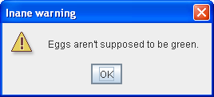
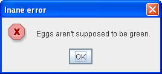
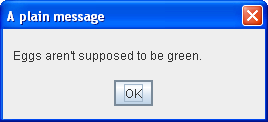
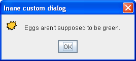
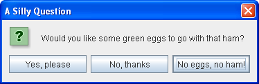
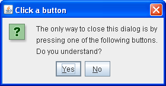
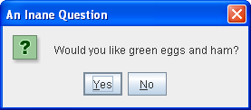
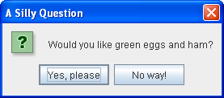

Lesson: Using Swing Components
Section: How to Use Various Components
How to Make Dialogs
A Dialog window is an independent subwindow meant to carry temporary notice apart from the main Swing Application Window. Most Dialogs present an error message or warning to a user, but Dialogs can present images, directory trees, or just about anything compatible with the main Swing Application that manages them.
For convenience, several Swing component classes can directly instantiate and display dialogs. To create simple, standard dialogs, you use the
JOptionPane class. The ProgressMonitor class can put up a dialog that shows the progress of an operation. Two other classes, JColorChooser and JFileChooser, also supply standard dialogs. To bring up a print dialog, you can use the
Printing API. To create a custom dialog, use the
JDialog class directly.
The code for simple dialogs can be minimal. For example, here is an informational dialog:
Here is the code that creates and shows it:
JOptionPane.showMessageDialog(frame, "Eggs are not supposed to be green.");
The rest of this section covers the following topics:
- An Overview of Dialogs
- The DialogDemo Example
- JOptionPane Features
- Creating and Showing Simple Dialogs
- Customizing Button Text
- Getting the User's Input from a Dialog
- Stopping Automatic Dialog Closing
- The Dialog API
- Examples that Use Dialogs
An Overview of Dialogs
Every dialog is dependent on a Frame component. When that Frame is destroyed, so are its dependent Dialogs. When the frame is iconified, its dependent Dialogs also disappear from the screen. When the frame is deiconified, its dependent Dialogs return to the screen. A swing JDialog class inherits this behavior from the AWT Dialog class.
A Dialog can be modal. When a modal Dialog is visible, it blocks user input to all other windows in the program. JOptionPane creates JDialogs that are modal. To create a non-modal Dialog, you must use the JDialog class directly.
Starting with JDK 7, you can modify dialog window modality behavior using the new Modality API. See The New Modality API for details.
The JDialog class is a subclass of the AWT
java.awt.Dialog class. It adds a root pane container and support for a default close operation to the Dialog object . These are the same features that JFrame has, and using JDialog directly is very similar to using JFrame. If you're going to use JDialog directly, then you should understand the material in Using Top-Level Containers and How to Make Frames, especially Responding to Window-Closing Events.
Even when you use JOptionPane to implement a dialog, you're still using a JDialog behind the scenes. The reason is that JOptionPane is simply a container that can automatically create a JDialog and add itself to the JDialog's content pane.
The DialogDemo Example
Here is a picture of an application that displays dialogs.
Try this::
- Click the Launch button to run the Dialog Demo using
Java™ Web Start (download JDK 7 or later). Alternatively, to compile and run the example yourself, consult the example index.

- Click the Show it! button.
A modal dialog will appear. Until you close it, the application will be unresponsive, although it will repaint itself if necessary. You can close the dialog either by clicking a button in the dialog or explicitly, such as by using the dialog window decorations. - In the More Dialogs pane, click the bottom radio button and then the Show it! button.
A non-modal dialog will appear. Note that the DialogDemo window remains fully functional while the non-modal dialog is up. - While the non-modal dialog is showing, iconify the DialogDemo window.
The dialog will disappear from the screen until you deiconify the DialogDemo window.
JOptionPane Features
Using JOptionPane, you can quickly create and customize several different kinds of dialogs. JOptionPane provides support for laying out standard dialogs, providing icons, specifying the dialog title and text, and customizing the button text. Other features allow you to customize the components the dialog displays and specify where the dialog should appear onscreen. You can even specify that an option pane put itself into an internal frame (JInternalFrame) instead of a JDialog.
When you create a JOptionPane, look-and-feel-specific code adds components to the JOptionPane and determines the layout of those components.
JOptionPane's icon support lets you easily specify which icon the dialog displays. You can use a custom icon, no icon at all, or any one of four standard JOptionPane icons (question, information, warning, and error). Each look and feel has its own versions of the four standard icons. The following figure shows the icons used in the Java (and Windows) look and feel.
| Icon description | Java look and feel | Windows look and feel |
|---|---|---|
| question |
|
|
| information |
|
|
| warning |
|
|
| error |
|
Creating and Showing Simple Dialogs
For most simple modal dialogs, you create and show the dialog using one of JOptionPane's showXxxDialog methods. If your dialog should be an internal frame, then add Internal after show — for example, showMessageDialog changes to showInternalMessageDialog. If you need to control the dialog window-closing behavior or if you do not want the dialog to be modal, then you should directly instantiate JOptionPane and add it to a JDialog instance. Then invoke setVisible(true) on the JDialog to make it appear.
The two most useful showXxxDialog methods are showMessageDialog and showOptionDialog. The showMessageDialog method displays a simple, one-button dialog. The showOptionDialog method displays a customized dialog — it can display a variety of buttons with customized button text, and can contain a standard text message or a collection of components.
The other two showXxxDialog methods are used less often. The showConfirmDialog method asks the user to confirm something, but presents standard button text (Yes/No or the localized equivalent, for example) rather than button text customized to the user situation (Start/Cancel, for example). A fourth method, showInputDialog, is designed to display a modal dialog that gets a string from the user, using either a text field, an uneditable combo box or a list.
Here are some examples, taken from
DialogDemo.java, of using showMessageDialog, showOptionDialog, and the JOptionPane constructor. For more example code, see
DialogDemo.java and the other programs listed in Examples that Use Dialogs.
showMessageDialog- Displays a modal dialog with one button, which is labeled "OK" (or the localized equivalent). You can easily specify the message, icon, and title that the dialog displays. Here are some examples of using
showMessageDialog://default title and icon JOptionPane.showMessageDialog(frame, "Eggs are not supposed to be green."); //custom title, warning icon JOptionPane.showMessageDialog(frame, "Eggs are not supposed to be green.", "Inane warning", JOptionPane.WARNING_MESSAGE); //custom title, error icon JOptionPane.showMessageDialog(frame, "Eggs are not supposed to be green.", "Inane error", JOptionPane.ERROR_MESSAGE); //custom title, no icon JOptionPane.showMessageDialog(frame, "Eggs are not supposed to be green.", "A plain message", JOptionPane.PLAIN_MESSAGE); //custom title, custom icon JOptionPane.showMessageDialog(frame, "Eggs are not supposed to be green.", "Inane custom dialog", JOptionPane.INFORMATION_MESSAGE, icon); showOptionDialog- Displays a modal dialog with the specified buttons, icons, message, title, and so on. With this method, you can change the text that appears on the buttons of standard dialogs. You can also perform many other kinds of customization.
 //Custom button text Object[] options = {"Yes, please", "No, thanks", "No eggs, no ham!"}; int n = JOptionPane.showOptionDialog(frame, "Would you like some green eggs to go " + "with that ham?", "A Silly Question", JOptionPane.YES_NO_CANCEL_OPTION, JOptionPane.QUESTION_MESSAGE, null, options, options[2]); JOptionPane(constructor)- Creates a
JOptionPanewith the specified buttons, icons, message, title, and so on. You must then add the option pane to aJDialog, register a property-change listener on the option pane, and show the dialog. See Stopping Automatic Dialog Closing for details. final JOptionPane optionPane = new JOptionPane( "The only way to close this dialog is by\n" + "pressing one of the following buttons.\n" + "Do you understand?", JOptionPane.QUESTION_MESSAGE, JOptionPane.YES_NO_OPTION);
The arguments to all of the showXxxDialog methods and JOptionPane constructors are standardized, though the number of arguments for each method and constructor varies. The following list describes each argument. To see the exact list of arguments for a particular method, see The Dialog API.
Component parentComponent- The first argument to each
showXxxDialogmethod is always the parent component, which must be a Frame, a component inside a Frame, or null. If you specify a Frame or Dialog, then the Dialog will appear over the center of the Frame and follow the focus behavior of that Frame. If you specify a component inside a Frame, then the Dialog will appear over the center of that component and will follow the focus behavior of that component's Frame. If you specify null, then the look and feel will pick an appropriate position for the dialog — generally the center of the screen — and the Dialog will not necessarily follow the focus behavior of any visible Frame or Dialog.The
JOptionPaneconstructors do not include this argument. Instead, you specify the parent frame when you create theJDialogthat contains theJOptionPane, and you use theJDialogsetLocationRelativeTomethod to set the dialog position. Object message- This required argument specifies what the dialog should display in its main area. Generally, you specify a string, which results in the dialog displaying a label with the specified text. You can split the message over several lines by putting newline (
\n) characters inside the message string. For example:"Complete the sentence:\n \"Green eggs and...\""
String title- The title of the dialog.
int optionType- Specifies the set of buttons that appear at the bottom of the dialog. Choose from one of the following standard sets:
DEFAULT_OPTION,YES_NO_OPTION,YES_NO_CANCEL_OPTION,OK_CANCEL_OPTION. int messageType- This argument determines the icon displayed in the dialog. Choose from one of the following values:
PLAIN_MESSAGE(no icon),ERROR_MESSAGE,INFORMATION_MESSAGE,WARNING_MESSAGE,QUESTION_MESSAGE. Icon icon- The icon to display in the dialog.
Object[] options- Generally used to specify the string displayed by each button at the bottom of the dialog. See Customizing Button Text in a Standard Dialog for more information. Can also be used to specify icons to be displayed by the buttons or non-button components to be added to the button row.
Object initialValue- Specifies the default value to be selected.
You can either let the option pane display its default icon or specify the icon using the message type or icon argument. By default, an option pane created with showMessageDialog displays the information icon, one created with showConfirmDialog or showInputDialog displays the question icon, and one created with a JOptionPane constructor displays no icon. To specify that the dialog display a standard icon or no icon, specify the message type corresponding to the icon you desire. To specify a custom icon, use the icon argument. The icon argument takes precedence over the message type; as long as the icon argument has a non-null value, the dialog displays the specified icon.
Customizing Button Text
When you use JOptionPane to create a dialog, you can either use the standard button text (which might vary by look and feel and locale) or specify different text. By default, the option pane type determines how many buttons appear. For example, YES_NO_OPTION dialogs have two buttons, and YES_NO_CANCEL_OPTION dialogs have three buttons.
The following code, taken from
DialogDemo.java, creates two Yes/No dialogs. The first dialog is implemented with showConfirmDialog, which uses the look-and-feel wording for the two buttons. The second dialog uses showOptionDialog so it can customize the wording. With the exception of wording changes, the dialogs are identical.
|  |
//default icon, custom title
int n = JOptionPane.showConfirmDialog(
frame,
"Would you like green eggs and ham?",
"An Inane Question",
JOptionPane.YES_NO_OPTION);
|
|  |
Object[] options = {"Yes, please",
"No way!"};
int n = JOptionPane.showOptionDialog(frame,
"Would you like green eggs and ham?",
"A Silly Question",
JOptionPane.YES_NO_OPTION,
JOptionPane.QUESTION_MESSAGE,
null, //do not use a custom Icon
options, //the titles of buttons
options[0]); //default button title
|
As the previous code snippets showed, the showMessageDialog, showConfirmDialog, and showOptionDialog methods return an integer indicating the user's choice. The values for this integer are YES_OPTION, NO_OPTION, CANCEL_OPTION, OK_OPTION, and CLOSED_OPTION. Except for CLOSED_OPTION, each option corresponds to the button the user pressed. When CLOSED_OPTION is returned, it indicates that the user closed the dialog window explicitly, rather than by choosing a button inside the option pane.
Even if you change the strings that the standard dialog buttons display, the return value is still one of the pre-defined integers. For example, a YES_NO_OPTION dialog always returns one of the following values: YES_OPTION, NO_OPTION, or CLOSED_OPTION.
Getting the User's Input from a Dialog
The only form of showXxxDialog that does not return an integer is showInputDialog, which returns an Object instead. This Object is generally a String reflecting the user's choice. Here is an example of using showInputDialog to create a dialog that lets the user choose one of three strings:
Object[] possibilities = {"ham", "spam", "yam"};
String s = (String)JOptionPane.showInputDialog(
frame,
"Complete the sentence:\n"
+ "\"Green eggs and...\"",
"Customized Dialog",
JOptionPane.PLAIN_MESSAGE,
icon,
possibilities,
"ham");
//If a string was returned, say so.
if ((s != null) && (s.length() > 0)) {
setLabel("Green eggs and... " + s + "!");
return;
}
//If you're here, the return value was null/empty.
setLabel("Come on, finish the sentence!");
If you do not care to limit the user's choices, you can either use a form of the showInputDialog method that takes fewer arguments or specify null for the array of objects. In the Java look and feel, substituting null for possibilities results in a dialog that has a text field and looks like this:
Because the user can type anything into the text field, you might want to check the returned value and ask the user to try again if it is invalid. Another approach is to create a custom dialog that validates the user-entered data before it returns. See
CustomDialog.java for an example of validating data.
If you're designing a custom dialog, you need to design your dialog's API so that you can query the dialog about what the user chose. For example, CustomDialog has a getValidatedText method that returns the text the user entered.
Stopping Automatic Dialog Closing
By default, when the user clicks a JOptionPane-created button, the dialog closes. But what if you want to check the user's answer before closing the dialog? In this case, you must implement your own property change listener so that when the user clicks a button, the dialog does not automatically close.
DialogDemo contains two dialogs that implement a property change listener. One of these dialogs is a custom modal dialog, implemented in
CustomDialog, that uses JOptionPane both to get the standard icon and to get layout assistance. The other dialog, whose code is below, uses a standard Yes/No JOptionPane. Though this dialog is rather useless as written, its code is simple enough that you can use it as a template for more complex dialogs.
Besides setting the property change listener, the following code also calls the JDialog's setDefaultCloseOperation method and implements a window listener that handles the window close attempt properly. If you do not care to be notified when the user closes the window explicitly, then ignore the bold code.
final JOptionPane optionPane = new JOptionPane(
"The only way to close this dialog is by\n"
+ "pressing one of the following buttons.\n"
+ "Do you understand?",
JOptionPane.QUESTION_MESSAGE,
JOptionPane.YES_NO_OPTION);
final JDialog dialog = new JDialog(frame,
"Click a button",
true);
dialog.setContentPane(optionPane);
dialog.setDefaultCloseOperation(
JDialog.DO_NOTHING_ON_CLOSE);
dialog.addWindowListener(new WindowAdapter() {
public void windowClosing(WindowEvent we) {
setLabel("Thwarted user attempt to close window.");
}
});
optionPane.addPropertyChangeListener(
new PropertyChangeListener() {
public void propertyChange(PropertyChangeEvent e) {
String prop = e.getPropertyName();
if (dialog.isVisible()
&& (e.getSource() == optionPane)
&& (prop.equals(JOptionPane.VALUE_PROPERTY))) {
//If you were going to check something
//before closing the window, you'd do
//it here.
dialog.setVisible(false);
}
}
});
dialog.pack();
dialog.setVisible(true);
int value = ((Integer)optionPane.getValue()).intValue();
if (value == JOptionPane.YES_OPTION) {
setLabel("Good.");
} else if (value == JOptionPane.NO_OPTION) {
setLabel("Try using the window decorations "
+ "to close the non-auto-closing dialog. "
+ "You can't!");
}
The Dialog API
The following tables list the commonly used JOptionPane and JDialog constructors and methods. Other methods you're likely to call are defined by the
Dialog,
Window and
Component classes and include pack, setSize, and setVisible.
The API is listed as follows:
- Showing Standard Modal Dialogs (using
JOptionPaneClass Methods) - Methods for Using
JOptionPanes Directly - Frequently Used
JDialogConstructors and Methods
| Method | Purpose |
|---|---|
|
static void showMessageDialog(Component, Object) static void showMessageDialog(Component, Object, String, int) static void showMessageDialog(Component, Object, String, int, Icon) |
Show a one-button, modal dialog that gives the user some information. The arguments specify (in order) the parent component, message, title, message type, and icon for the dialog. See Creating and Showing Simple Dialogs for a discussion of the arguments and their effects. |
| static int showOptionDialog(Component, Object, String, int, int, Icon, Object[], Object) | Show a customized modal dialog. The arguments specify (in order) the parent component, message, title, option type, message type, icon, options, and initial value for the dialog. See Creating and Showing Simple Dialogs for a discussion of the arguments and their effects. |
|
static int showConfirmDialog(Component, Object) static int showConfirmDialog(Component, Object, String, int) static int showConfirmDialog(Component, Object, String, int, int) static int showConfirmDialog(Component, Object, String, int, int, Icon) |
Show a modal dialog that asks the user a question. The arguments specify (in order) the parent component, message, title, option type, message type, and icon for the dialog. See Creating and Showing Simple Dialogs for a discussion of the arguments and their effects. |
|
static String showInputDialog(Object) static String showInputDialog(Component, Object) static String showInputDialog(Component, Object, String, int) static String showInputDialog(Component, Object, String, int, Icon, Object[], Object) |
Show a modal dialog that prompts the user for input. The single-argument version specifies just the message, with the parent component assumed to be null. The arguments for the other versions specify (in order) the parent component, message, title, message type, icon, options, and initial value for the dialog. See Creating and Showing Simple Dialogs for a discussion of the arguments and their effects. |
|
static void showInternalMessageDialog(...) static void showInternalOptionDialog(...) static void showInternalConfirmDialog(...) static String showInternalInputDialog(...) |
Implement a standard dialog as an internal frame. See the
JOptionPane API documentation for the exact list of arguments. |
| Method or Constructor | Purpose |
|---|---|
|
JOptionPane() JOptionPane(Object) JOptionPane(Object, int) JOptionPane(Object, int, int) JOptionPane(Object, int, int, Icon) JOptionPane(Object, int, int, Icon, Object[]) JOptionPane(Object, int, int, Icon, Object[], Object) |
Creates a JOptionPane instance. See Creating and Showing Simple Dialogs for a discussion of the arguments and their effects. |
|
static Frame getFrameForComponent(Component) static JDesktopPane getDesktopPaneForComponent(Component) |
Handy JOptionPane class methods that find the frame or desktop pane, respectively, that the specified component is in. |
| int getMaxCharactersPerLineCount() | Determines where line breaks will be automatically inserted in the option pane text. (The default is Integer.MAX_VALUE.) To use this method, you must create a JOptionPane subclass. For example, the following code results in an option pane with one word per line, due to the fact that each word in the string is 5 characters or less:
JOptionPane op = new JOptionPane("This is the text.") {
public int getMaxCharactersPerLineCount() {
return 5;
}
};
|
| Method or Constructor | Purpose |
|---|---|
|
JDialog() JDialog(Dialog) JDialog(Dialog, boolean) JDialog(Dialog, String) JDialog(Dialog, String, boolean) JDialog(Dialog, String, boolean, GraphicsConfiguration) JDialog(Frame) JDialog(Frame, boolean) JDialog(Frame, String) JDialog(Frame, String, boolean) JDialog(Frame, String, boolean, GraphicsConfiguration) JDialog(Window owner) JDialog(Window owner, Dialog.ModalityType modalityType) JDialog(Window owner, String title) JDialog(Window owner, String title, Dialog.ModalityType modalityType) JDialog(Window owner, String title, Dialog.ModalityType modalityType, GraphicsConfiguration gc) |
Creates a JDialog instance. The Frame argument, if any, is the frame (usually a JFrame object) that the dialog depends on. Make the boolean argument true to specify a modal dialog, false or absent to specify a non-modal dialog. You can also specify the title of the dialog, using a string argument. |
|
void setContentPane(Container) Container getContentPane() |
Get and set the content pane, which is usually the container of all the dialog's components. See Using Top-Level Containers for more information. |
|
void setDefaultCloseOperation(int) int getDefaultCloseOperation() |
Get and set what happens when the user tries to close the dialog. Possible values: DISPOSE_ON_CLOSE, DO_NOTHING_ON_CLOSE, HIDE_ON_CLOSE (the default). See Responding to Window-Closing Events for more information. |
| void setLocationRelativeTo(Component) | Centers the dialog over the specified component. |
|
static void setDefaultLookAndFeelDecorated(boolean) static boolean isDefaultLookAndFeelDecorated() |
Set or get a hint as to whether the dialog's window decorations (such as borders, or widgets to close the window) should be provided by the current look and feel. Otherwise the dialog's decorations will be provided by the current window manager. See Specifying Window Decorations for more information. |
Examples that Use Dialogs
This table lists examples that use JOptionPane or JDialog. To find other examples that use dialogs, see the example lists for progress bars, color choosers, and file choosers.
| Example | Where Described | Notes |
|---|---|---|
DialogDemo,CustomDialog |
This section | Creates many kinds of dialogs, using JOptionPane and JDialog. |
Framework |
— | Brings up a confirmation dialog when the user selects the Quit menu item. |
ListDialog |
How to Use BoxLayout | Implements a modal dialog containing a scrolling list and two buttons. Does not use JOptionPane, except for the utility method getFrameForComponent. |